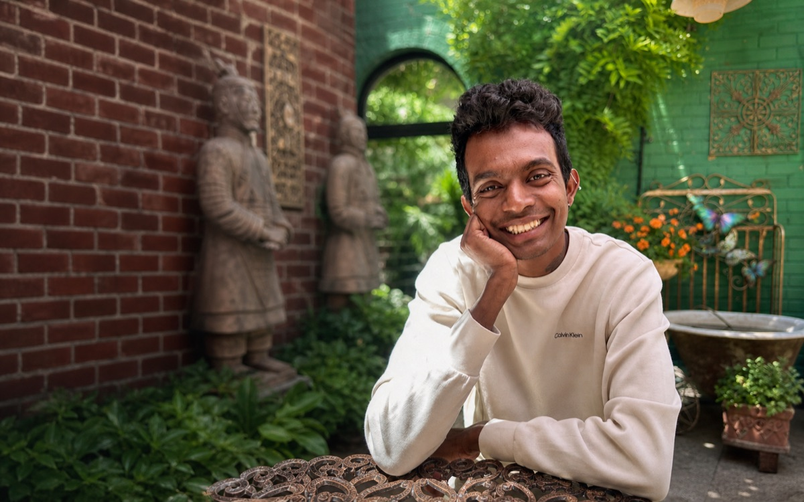
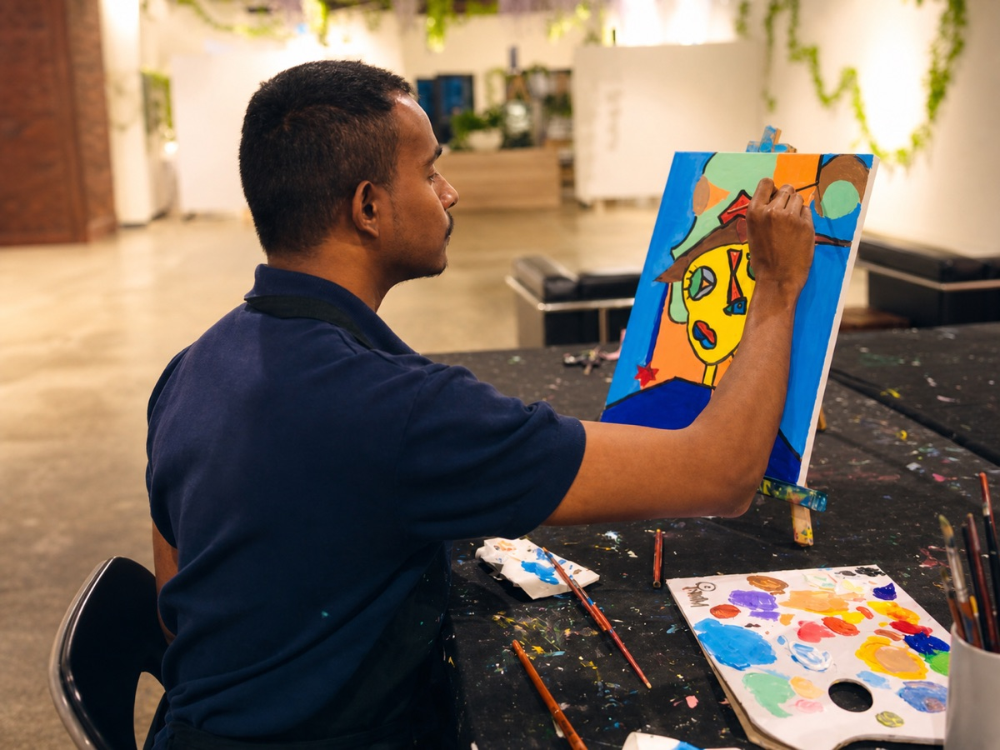
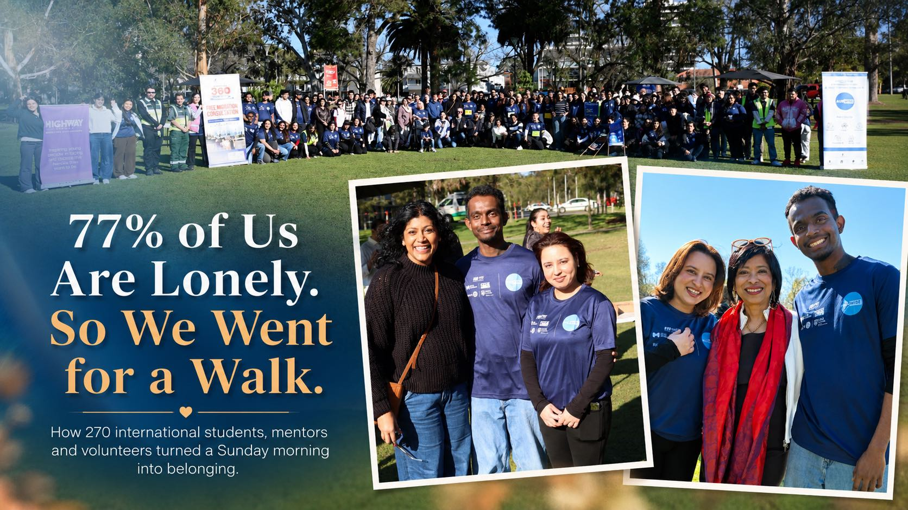
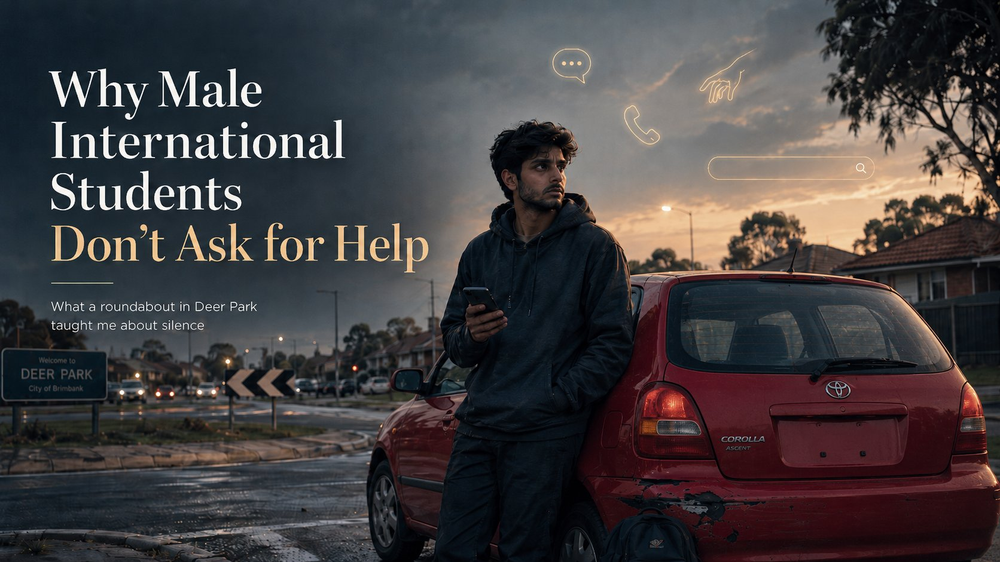
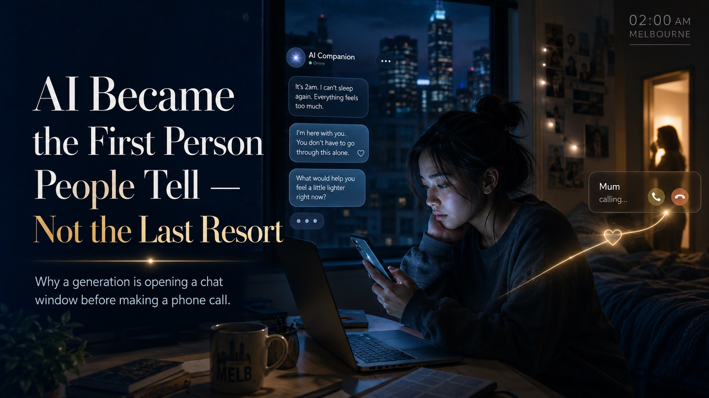

Roots
Sri Lanka. An ordinary family, an extraordinary amount of love, and Sundays at my mother's table.
Mental health, migration, study, work
Nobody warns you that the hardest part of studying abroad happens in your head. This is a space for international students to talk about mental health — no filter, no judgment, no pretending it is easy or all okay.

I was born in Sri Lanka to an ordinary family with an extraordinary amount of love. Then the ocean came, a war ended, and in 2018 I crossed the world to Melbourne on my own.
This is where I tell it honestly — what it really costs to study abroad, what loss and faith have taught me, and why I'm here to walk it with you.
Read the full story
Sri Lanka. An ordinary family, an extraordinary amount of love, and Sundays at my mother's table.
October 2018, Melbourne. Far from family, learning the quiet arithmetic of the international student.
Night shifts, skipped meals, a pandemic alone — carrying family on my back so they never felt the weight.
Buddhism in my bones, then the Gita, the Gospels, the Quran — love widening my library.
Community services, and a story to tell — here to walk it with you so you go further than I did.
Explore the blog
Honest reflections on anxiety, burnout, healing, therapy, stigma, and everyday wellbeing.
Study, visas, homesickness, work, culture, money, friendships, and settling in Australia.
Curated services, links, worksheets, books, podcasts, and practical tools.
Latest posts

77% of international students in Australia report loneliness. What happened when 270 of us walked Princes Park together on a Sunday morning.

62% of international students who hit a problem never ask for help. What a roundabout in Deer Park taught me about silence.

29% of young people in NSW now use AI for mental health support. Why international students reach for a chatbot before a person — and where that breaks down.
Why collaborate
A human voice for mental health and migration stories, written with empathy and responsibility.
Content built for people experiencing mental illness, international students, and sector professionals.
Partnerships, talks, resources, and storytelling — building things that genuinely help people.
Upcoming projects
In progress
A practical guide for international students navigating mental health, study pressure, and support services.
Planning
A future interview series with students, professionals, advocates, and community builders.
Future idea
Short essays, video stories, and creative pieces that make complex feelings easier to talk about.
Collaborate
Whether it's a collaboration, a project, a talk, or just a hello — I'd genuinely like to hear from you.